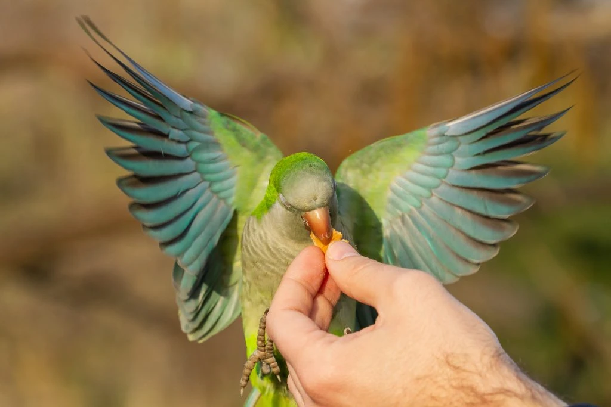

Let's Groom our Parrot

- Health Check: Schedule regular vet check-ups to monitor overall health.
- Feather Care: Provide a balanced diet for healthy feathers.
Offer occasional baths for cleanliness.
- Nail Trimming: Regularly check and trim nails using a bird nail clipper.
- Beak Check: Monitor beak length and shape.
Provide chew toys for natural beak maintenance.
- Dental Health: Ensure proper beak and jaw alignment.
Offer toys for beak and jaw exercise.
- Social Interaction: Spend quality time daily for bonding.
Positive reinforcement for good behavior.
- Environmental Enrichment: Keep the cage interesting with diverse toys.
Rotate toys to prevent boredom.
- Regular Routine: Establish a routine for consistent grooming and monitoring of your cat's health.
*Note:Remember, each parrot is unique, and grooming routines may vary. Always approach grooming with patience, positive reinforcement, and respect for your parrot's individual preferences and sensitivities.